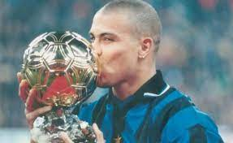

RONALDO O FENOMENO By: Antonio neto
.jpeg) De família humilde, começou treinando no Flamengo, seguindo depois para o São Cristóvão. A carreira profissional teve início no Cruzeiro, time em que fez sua estreia aos 16 anos. Destaque no Campeonato Mineiro e Brasileiro no início dos anos 1990, passou a chamar atenção de clubes europeus Ao longo dos anos 1990, passou pelo PSV Eindhoven, Barcelona e Internazionale. Na Copa do Mundo de 1994, foi selecionado, mas ficou no banco de reservas do time tetracampeão. Atuou ainda no Mundial de 1998, quando teve uma convulsão pouco antes da final, mas saiu como um dos principais nomes do pentacampeonato, em 2002.Nos anos 2000, jogou no Real Madrid e no Milan. Voltou ao Brasil para encerrar a carreira no Corinthians, em 2008. Desde então, dedica-se à carreira como empresário, especialista em marketing esportivo. Também é figura constante em campanhas publicitárias e comentarista de futebol em programas e transmissões de TV.Foi casado pela primeira vez, de 1999 a 2003, com Milene Domingues, com quem teve um filho, Ronald. Também casou-se com a apresentadora e modelo Daniella Cicarelli em 2005, mas a união durou um pouco mais de dois meses. A terceira união, de 2008 a 2012, foi com Bia Antony, mãe de suas duas filhas, Maria Sofia e Maria Alice. Em 2010, Ronaldo reconheceu a paternidade do seu quarto filho, Alexander, fruto de um relacionamento com a modelo Michele Umezu em 2004. Com o fim do casamento com Bia Antony, em 2012, começou o relacionamento com a DJ Paula Morais, que durou até 2014. Desde 2015, ele namora a modelo Celina Locks.
De família humilde, começou treinando no Flamengo, seguindo depois para o São Cristóvão. A carreira profissional teve início no Cruzeiro, time em que fez sua estreia aos 16 anos. Destaque no Campeonato Mineiro e Brasileiro no início dos anos 1990, passou a chamar atenção de clubes europeus Ao longo dos anos 1990, passou pelo PSV Eindhoven, Barcelona e Internazionale. Na Copa do Mundo de 1994, foi selecionado, mas ficou no banco de reservas do time tetracampeão. Atuou ainda no Mundial de 1998, quando teve uma convulsão pouco antes da final, mas saiu como um dos principais nomes do pentacampeonato, em 2002.Nos anos 2000, jogou no Real Madrid e no Milan. Voltou ao Brasil para encerrar a carreira no Corinthians, em 2008. Desde então, dedica-se à carreira como empresário, especialista em marketing esportivo. Também é figura constante em campanhas publicitárias e comentarista de futebol em programas e transmissões de TV.Foi casado pela primeira vez, de 1999 a 2003, com Milene Domingues, com quem teve um filho, Ronald. Também casou-se com a apresentadora e modelo Daniella Cicarelli em 2005, mas a união durou um pouco mais de dois meses. A terceira união, de 2008 a 2012, foi com Bia Antony, mãe de suas duas filhas, Maria Sofia e Maria Alice. Em 2010, Ronaldo reconheceu a paternidade do seu quarto filho, Alexander, fruto de um relacionamento com a modelo Michele Umezu em 2004. Com o fim do casamento com Bia Antony, em 2012, começou o relacionamento com a DJ Paula Morais, que durou até 2014. Desde 2015, ele namora a modelo Celina Locks.
Nazário é considerado um dos maiores atletas de todos os tempos. Entre as conquistas de sua carreira, ele ocupa a segunda posição no ranking de goleadores da seleção brasileira e da história das Copas do Mundo. Além disso, Ronaldo foi um dos protagonistas do pentacampeonato brasileiro. História que se tornou ainda mais marcante pela sua superação após sofrer uma grave lesão. Ronaldo Nazário acumulou títulos coletivos e individuais durante seu período como jogador. Também tem em seu currículo a passagem por times de primeiro escalão do futebol mundial. Ronaldo Nazário se encaixa em uma seleta lista de atletas que fizeram sucesso no esporte e nos negócios, caso do astro Michael Jordan e do conhecido George Foreman.
.jpeg)
Ronaldo Nazário, o “Fenômeno”, recebeu esse apelido da imprensa italiana, em uma das melhores temporadas de sua carreira, na Internazionale (Inter de Milão). Sua brilhante carreira se iniciou profissionalmente no Cruzeiro em 1993, conquistando a Copa do Brasil e o Campeonato Mineiro. Posteriormente, seguiu para a Europa para jogar no PSV Eindhoven, assim como seu compatriota Romário, sendo artilheiro do Campeonato Holandês e campeão da Copa dos Países Baixos. Depois do tremendo sucesso na Holanda, Ronaldo foi comprado pelo Barcelona-ESP em 1996, onde teve a melhor temporada de sua carreira em número de gols, conquistando a Supercopa da Espanha, a Copa do Rei e a Recopa Europeia, escolhido como Melhor Jogador do Mundo pela FIFA. Na temporada seguinte, transferiu-se para a Internazionale, quebrando o recorde da transferência mais cara da história até então. Foi eleito pela segunda vez como o melhor jogador do mundo em sua primeira temporada no clube e ganhou um novo “sobrenome”. Assim, passou de Ronaldo Nazário para Ronaldo Fenômeno.

Após a desclassificação precoce na Copa Libertadores da América de 2011, Ronaldo não conseguiu mais suportar suas dores físicas, e decidiu anunciar oficialmente a sua aposentadoria em 14 de fevereiro de 2011, numa coletiva de imprensa.[91] Segundo ele, sua aposentadoria se deu pelo fato de estar enfrentando seguidas lesões, inclusive revelando que sofria de hipotireoidismo, um distúrbio metabólico que desacelera o metabolismo e dificulta a perda de peso. O jogador afirmou que o problema poderia ser resolvido com ingestão de hormônios, porém, esta prática é proibida no futebol, e acarretaria numa suspensão por doping.[92] Porém, médicos discordam que o tratamento seja confundido com doping.[93] E o próprio médico do Corinthians afirmou que Ronaldo não tinha esta doença. O hipotireoidismo costuma ser associado a um leve ganho de peso (eminentemente por acúmulo de líquidos e não por aumento de gordura) e uma dificuldade para se livrar de quilos extras.
Clubes:
Ronaldo jogou em vários clubes ao longo de sua carreira, incluindo Cruzeiro (1993-1994), PSV Eindhoven (1994-1996), Barcelona (1996-1997), Internazionale (1997-2002), Real Madrid (2002-2007), Milan (2007-2008) e Corinthians (2009-2011).
Copa do Mundo:
Ronaldo conquistou a Copa do Mundo com a seleção brasileira em 1994 e 2002.
Ele é o maior artilheiro da história das Copas do Mundo, com um total de 15 gols em quatro torneios (1994, 1998, 2002 e 2006).
Prêmios Individuais:
Ronaldo recebeu inúmeros prêmios e reconhecimentos individuais ao longo de sua carreira, incluindo três vezes o prêmio FIFA Melhor Jogador do Mundo (1996, 1997 e 2002).
Ele foi artilheiro do Campeonato Brasileiro em 1993, da Copa América em 1997 e da Copa das Confederações em 1997.
Ronaldo também recebeu a Chuteira de Ouro da FIFA em 1997 e 2002 como o principal artilheiro do futebol europeu.
Estatísticas Gerais:
Ao longo de sua carreira, Ronaldo marcou mais de 400 gols em jogos de clubes.
Ele marcou 62 gols em 98 jogos pela seleção brasileira.
Ronaldo venceu a Liga dos Campeões da UEFA três vezes, com o Real Madrid em 1998, 2000 e 2002.
Ele foi eleito o Jogador do Ano pela FIFA em 1996, 1997 e 2002.
Essas são apenas algumas das estatísticas notáveis de Ronaldo Fenômeno. Sua habilidade, velocidade e poder de finalização o tornaram uma lenda do futebol e uma referência para muitos jogadores da nova geração.
